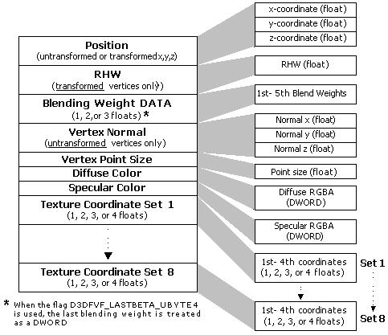

The flexible vertex format (FVF) is used to describe the contents of vertices stored interleaved in a single data stream. A FVF code is generally used to specify data to be processed by fixed function vertex processing.
One significant requirement that the system places on how you format your vertices is on the order in which the data appears. The following illustration depicts the required order for all possible vertex components in memory, and their associated data types.

The following flags describe a vertex format.
DWORD dwNumTextures = 1; // Vertex has only one set of
// coordinates.
// Shift the value for use when creating an FVF combination.
dwFVF = dwNumTextures<<D3DFVF_TEXCOUNT_SHIFT;
/*
* Now, create an FVF combination using the shifted value.
*/
The following example shows some other common flag combinations.
// Lightweight, untransformed vertex for lit, untextured,
// Gouraud-shaded content.
dwFVF = ( D3DFVF_XYZ | D3DFVF_DIFFUSE );
// Untransformed vertex for unlit, untextured, Gouraud-shaded
// content with diffuse material color specified per vertex.
dwFVF = ( D3DFVF_XYZ | D3DFVF_NORMAL | D3DFVF_DIFFUSE );
// Untransformed vertex for light-map-based lighting.
dwFVF = ( D3DFVF_XYZ | D3DFVF_TEX2 );
// Transformed vertex for light-map-based lighting
// with shared rhw.
dwFVF = ( D3DFVF_XYZRHW | D3DFVF_TEX2 );
// Heavyweight vertex for unlit, colored content with two
// sets of texture coordinates.
dwFVF = ( D3DFVF_XYZ | D3DFVF_NORMAL | D3DFVF_DIFFUSE |
D3DFVF_SPECULAR | D3DFVF_TEX2 );
Xbox does not support the D3DFVF_PSIZE flag or the D3DFVF_LASTBETA_UBYTE4 flag.